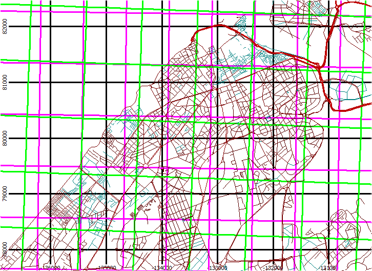
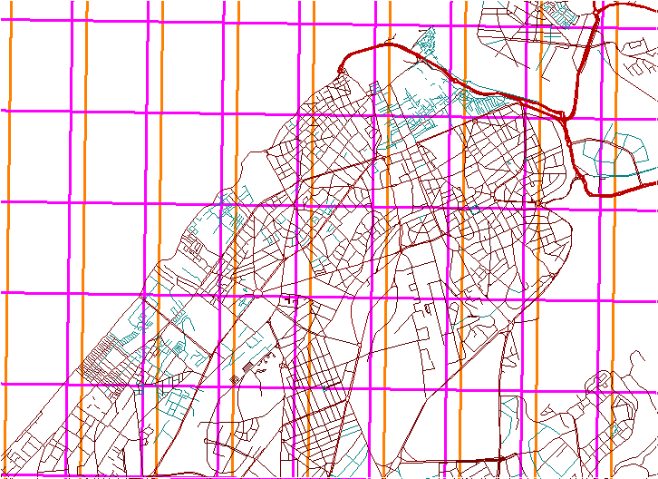

Grid Gallery
A map might have three kinds of grids:
- The lat/long graticule.
- A projected coordinate system used to locate points,
which does not have to be the actual projection of the map, such as:
- UTM. Printing this on the map allows easy computation of
coordiinates in the field, even with the map partially folded.
- SPCS
- A national grid, like the UK OS, Irish.
- The native projected grid of the projection. While the GIS program uses
these for plotting and computations, it will only be shown on the map if it
is also used to locate points.
- Lambert conformal conic. This is used to locate points in the
SPCS projections.
- Transverse Mercator
- Mercator. I don't know of a case where this is shown, or used
in computations.
There might also be grids in two different datums, in the case where a region
has two datums in common use, or changed the datum recently and old data or maps
are still present.
The spacing of the grid should have the same intervals in both the x and y
directions. If the GIS program allows you to set different spacings, you
should override the defaults and make them the same. This can lead to
challenges with labeling, but you can find a solution that is better than
differential spacing.
Appropriate grids on the map depends on the usage of the map:
- For a map for presentation purposes, or printing in a scientitific
journal, a single grid should be sufficient, and the cartographer must
decide which to use; the lat/long graticule should be strongly considered.
This map will only be viewed on a printed page, or online, and will have a
restricted size, typically a few thousand pixels.
- For a large paper map, one grid will probably be drawn, and the lat/long
graticule might be indicated with internal ticks on the map and labels along
the margins. If a second grid is required, it would have only ticks on
the margin, and a user would have to connect them to measure coordinates in
the field. This map could have the equivalent of tens of thousands of
pixels in each dimension.
|
 |
Three grids on a map of Rabat:
- Lat/long graticule
- UTM
- Native Lambert conformal conic
This is probably impossible to use effectively, even with three
different colors, but shows the
possible changes, and how they differ.
|
|
 |
Lat/long graticule for two datums
Note the datum shift is (almost) entirely in the east-west direction;
the WGS 84 layer is plotted second, and the east west parallels
completely overprint the secondary datum. There could a north
south shift, but it is less than the pixel size on this map.
|
|

|

|
Lat-long graticule with lines
- Graticule is not square, because a degree of
latitude does not equal a degree of longitude.
- You should be able to see that the "rectangles" are taller than they
are wide.
- If the graticule is "square", you are either at the equator or have
a map with bad distortion.
- You can set the graticule spacing.
- If the graticule parallels the edges of the map, you have a
geographic projection (like Mercator)
- If the graticule does not parallel the edges of the map, you have a
projection like UTM.
|
Lat-long ticks. Set spacing of the ticks. |
 Option on map toolbar or
by right clicking on the map window.
Option on map toolbar or
by right clicking on the map window.
Last revised 11/25/2017